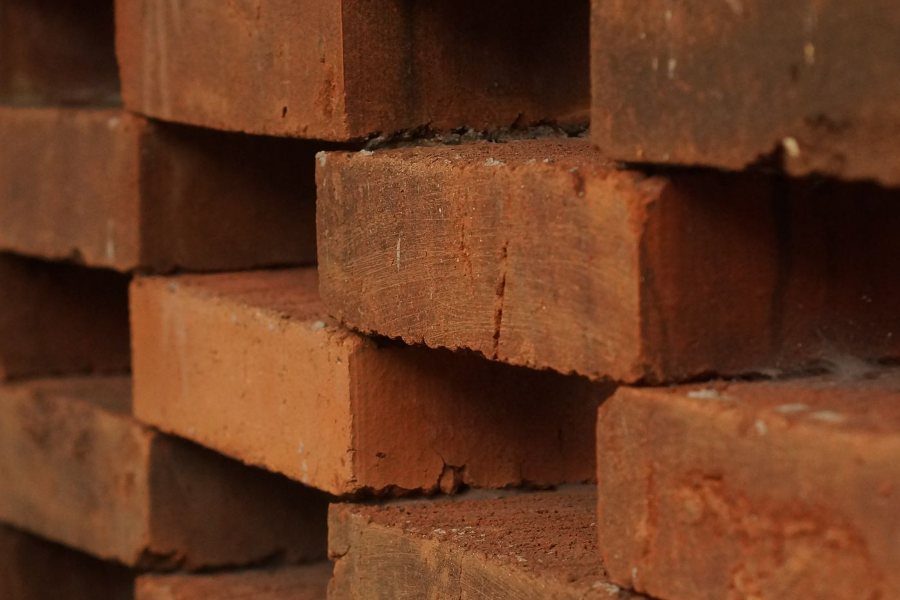
Brique pleine
Mur porteur, murs de clôture, ouvrages exposés. La plus dense de la gamme.
500 / 450 / 400 Fdétail · demi-gros · gros
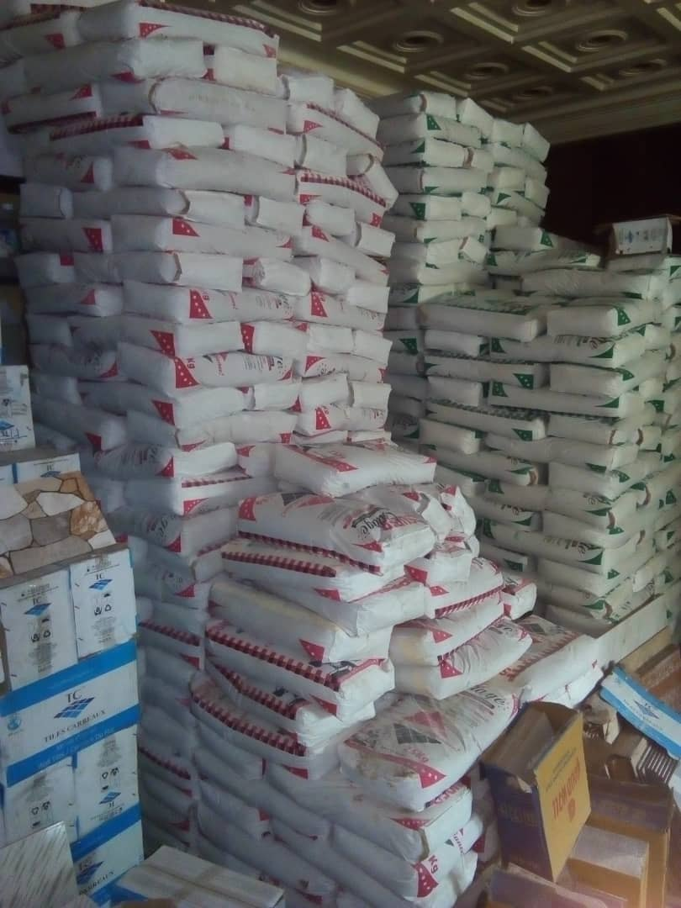
Ciment, fer à béton, tôles, peinture, carrelage, plomberie, électricité.
Voir le catalogue →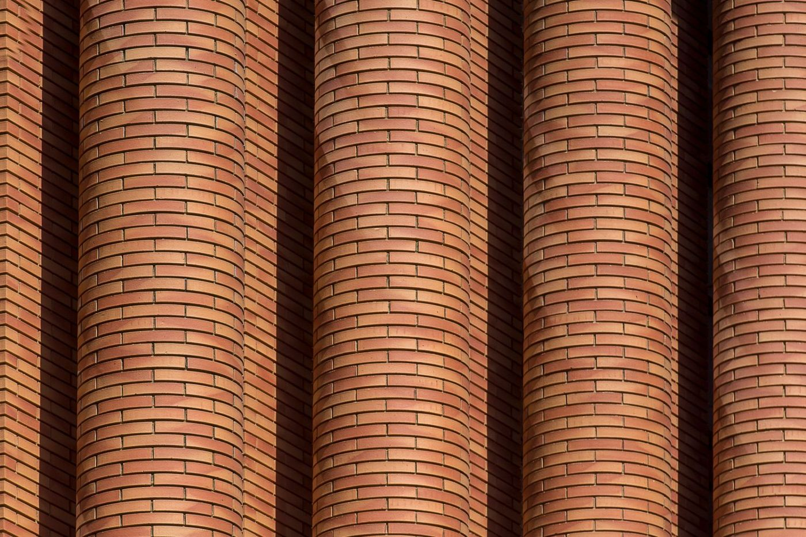
Brique pleine, brique perforée, plaquette de parement. Production à Toumodi.
Calculer mon besoin →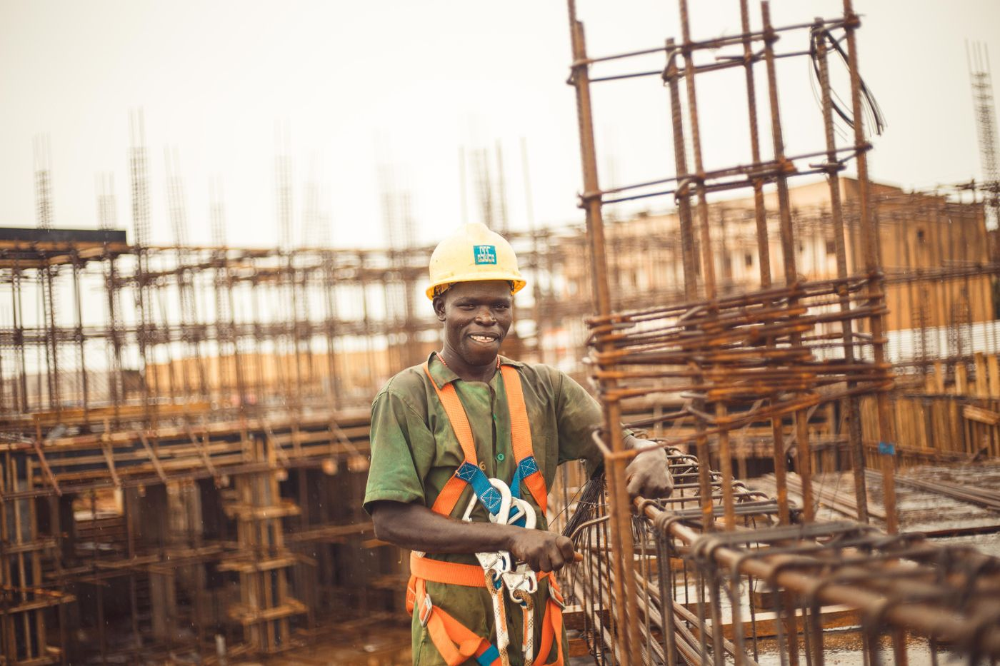
Plans, suivi de chantier, contrat clé en main, travaux routiers et hydrauliques.
Demander un devis →Qui nous sommes
Qui ne s'est jamais plaint d'avoir acheté un matériau de mauvaise qualité ? Qui n'a jamais eu affaire à un ouvrier dont la prestation l'a catastrophé ? Qui n'a jamais confié un projet immobilier à un proche, pour se sentir grugé au bout du compte ?
C'est de ce constat qu'est née MIENYAKWAISO ANWANZE SARL en septembre 2016, à Toumodi. Le matériau sans l'ouvrier ne donne rien. L'ouvrier sans le matériau non plus. Nous avons donc réuni la quincaillerie et la prestation BTP sous une seule responsabilité.
Aujourd'hui, un troisième métier s'ajoute aux deux autres : la production de briques de terre cuite. Ce n'est pas une diversification opportuniste. Le dérèglement climatique nous oblige à revenir aux fondamentaux. Bâtir avec la terre que nous avons sous les pieds, plutôt qu'avec des matériaux qui traversent la planète, c'est préserver l'écosystème et l'environnement. Pas seulement pour nous, mais pour les générations qui viennent après nous.
« Convaincus qu'en chaque individu est enfouie une parcelle de divinité, il est temps de la révéler en faveur de la construction d'un monde où chaque être vivant pourra vivre dignement dans un habitat sain. » Le directeur général
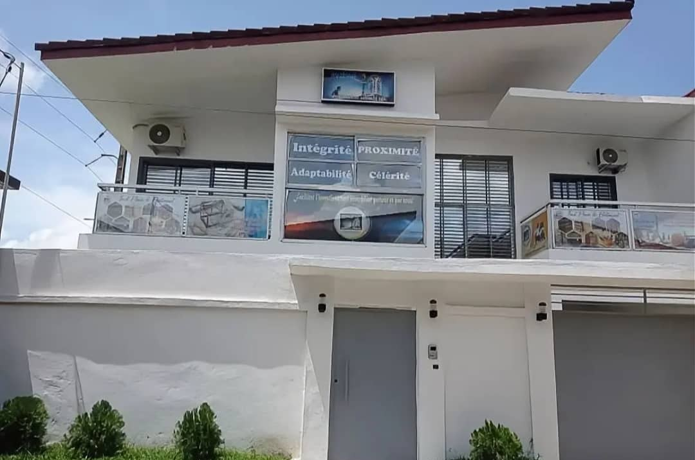
Le prix annoncé est le prix payé. Le transport est chiffré à part, jamais dissimulé dans une marge.
Un magasin physique à Toumodi, rue du Commerce. Une adresse, une porte, des visages.
Livraison partielle ou totale, selon l'avancement de votre chantier et votre trésorerie.
Un planning respecté. Un projet retardé est un projet qui finit par mourir.
Nous ne prétendrons pas que ces dix années ont été faciles. Il y a eu des saisons dures, des chantiers qui ont mal tourné, des années où il a fallu serrer. Beaucoup d'entreprises nées la même année que nous ont fermé depuis.
Nous sommes toujours là. C'est la seule chose qu'un concurrent ne peut pas copier et qu'un client ne peut pas acheter : la durée. Une adresse qui n'a pas bougé, une équipe qu'on peut venir voir, et un nom qui répond encore au téléphone dix ans après.
Et nous comptons y rester. Pas cinq ans de plus : durablement. Parce qu'une maison se bâtit pour les petits-enfants, et qu'un fournisseur qui disparaît ne vaut rien.
C'est tout ce que veulent dire nos quatre valeurs. Ce n'est pas un slogan d'affiche. Ce sont les règles qui nous ont permis de tenir. Elles nous viennent d'ici, de ce que nos aînés appelaient tenir sa parole.
Métier 1 · Disponible aujourd'hui
Le magasin de Toumodi est ouvert et approvisionné. Vous n'avez pas besoin de vous déplacer : envoyez votre liste sur WhatsApp, nous chiffrons, puis nous livrons.
Cette liste couvre les familles tenues en magasin. Un article absent du rayon peut être commandé : demandez, nous vous donnons le délai et le prix avant que vous n'engagiez quoi que ce soit.
Vous n'êtes pas un particulier
Une partie de notre stock ne s'adresse pas au détail. Ce sont des produits de structure, que nous tenons parce que nous suivons nous-mêmes des chantiers.
Ossature
Pannes Z et Sigma, profilés H, profilés placo. Tube carré, rectangle et rond, fer plat, cornière, TPN et TPG.
Plancher
La tôle nervurée qui sert de coffrage perdu et travaille avec le béton. Avec le fer à béton du diamètre 6 au diamètre 32.
Couverture
Bac aluminium standard, ondulée aluzinc prélaquée, métal tuile texturée. Avec faîtières, tirefonds, cavaliers et tiges filetées.
Envoyez votre quantitatif, même en photo d'un carnet. Nous chiffrons, nous vous disons ce que nous avons en stock et ce qu'il faut commander, avec le délai. Facture au nom de la société, RCCM CI-TDI-2016-B-570.
D'où viennent les matériaux
Nous l'achetons chez des industriels, pour la plupart installés en Côte d'Ivoire. Voici lesquels, pour que vous puissiez vérifier par vous-même.
CIMAF, Ciments de l'Afrique, usines à Vridi, Bouaké et San-Pédro. BIGCIM, Société de Ciment de Côte d'Ivoire. LIMAK Afrika, usine de PK24 au nord d'Abidjan.
Universelle Industries, à Yopougon. Fer à béton, pointes, tôles aluzinc et aluminium, cornières, fers plats, pannes Z et Sigma, plancher collaborant, profilés placo. Sa tôle Supertôle est certifiée par CODINORM selon la norme NI 323.
SOTACI, Société des Tubes d'Acier et d'Aluminium de Côte d'Ivoire, en activité depuis 1978, certifiée ISO 9001 version 2015.
SIPPEC, Société Industrielle de Produits Plastiques et Chimiques, usine de Yopougon.
Ces certifications sont celles de nos fournisseurs, pas les nôtres. Nos propres briques de terre cuite ne sont pas encore testées, et nous l'écrivons noir sur blanc : voir ce que nous ne prétendons pas.
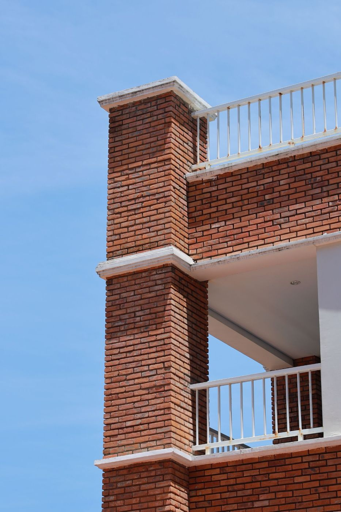
Métier 2
L'usine se monte à Toumodi, en bordure de l'autoroute A3. Voici les prix et le calcul, pour que vous puissiez décider avec des chiffres plutôt qu'avec des promesses.
| Produit | Détail moins de 500 |
Demi-gros 500 à 5 000 |
Gros plus de 5 000 |
|---|---|---|---|
| Brique pleine ou perforée | 500 F | 450 F | 400 F |
| Plaquette de parement | 400 F | 375 F | 350 F |
| Second choix | 250 F | 220 F | 200 F |
Prix unitaires en FCFA, hors transport. Le transport est calculé séparément et vous est montré avant que vous ne payiez.
soit environ 2 634 €
Envoyer ce calcul sur WhatsAppUne brique pèse environ 3,7 kg, d'où le tonnage affiché. Le transport n'est pas chiffré ici : le camion est affrété selon le tonnage et la fragilité du produit, et le coût vous est donné en ligne séparée sur le devis. Voir comment nous livrons.
Estimation. Elle ne tient compte ni des ouvertures, ni du mortier, ni de la casse de chantier. Un devis nominatif poste par poste vous est établi avant tout engagement.
La gamme
La même terre, la même cuisson, et huit produits qui couvrent le mur, le sol, la toiture et la façade. Chaque ligne porte son statut. Ce qui n'est pas encore prêt est écrit comme tel.

Mur porteur, murs de clôture, ouvrages exposés. La plus dense de la gamme.
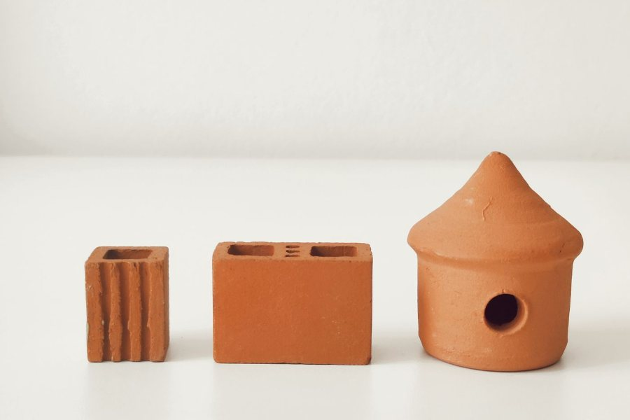
Mur porteur allégé. Moins de matière, moins de poids au transport, meilleure isolation.
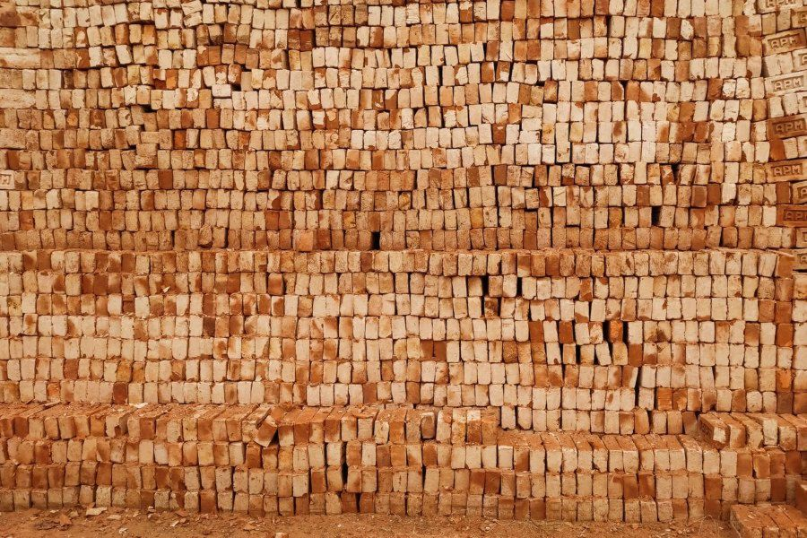
Habillage de façade et de mur intérieur. Une façade qui n'a plus besoin d'enduit ni de peinture.
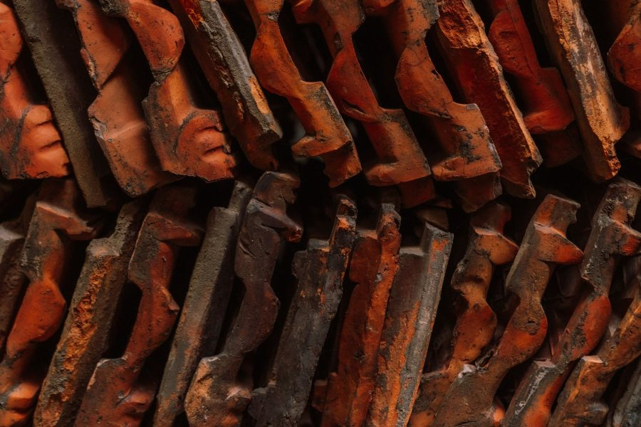
Briques hors calibre ou légèrement épaufrées. Pour les ouvrages non visibles et les remblais.
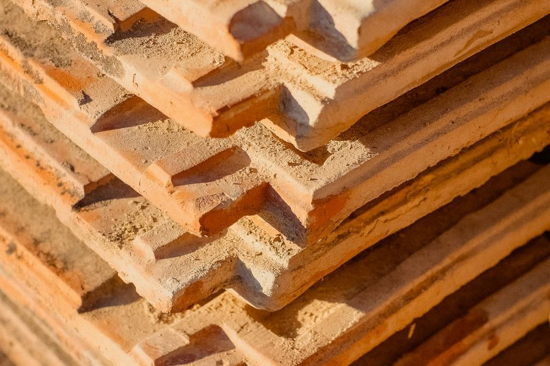
Couverture. Elle remplace la tôle, ne chauffe pas la maison au soleil de midi et ne fait pas de bruit sous la pluie.
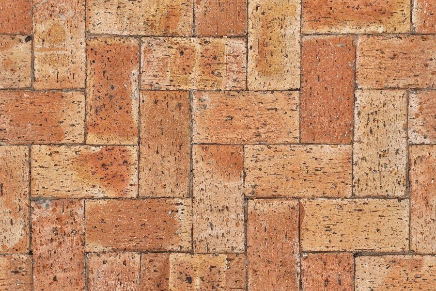
Sol intérieur et terrasse. Le carreau de terre cuite, froid sous le pied et qui vieillit bien.
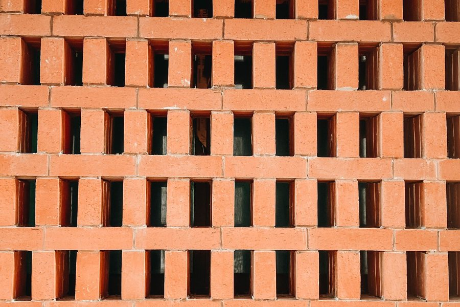
Le mur qui laisse passer l'air et arrête le soleil. L'élément le plus demandé sur les façades ivoiriennes.
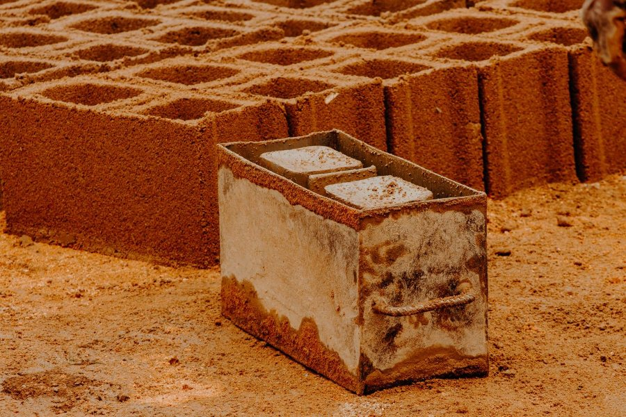
Entrevous de plancher. Il allège la dalle et remplace le hourdis béton, à volume égal.
Toute la gamme se commande. L'extrudeuse produit la brique, le hourdis et le claustra ; une presse a été commandée pour la tuile et la tomette. Vous passez commande, nous vous confirmons dans la journée la quantité disponible, le délai réel et le prix ferme. Vous ne payez qu'une fois d'accord sur ces trois points. Sur les formats les plus spécifiques, un délai de production peut s'appliquer : nous vous le disons avant, jamais après.
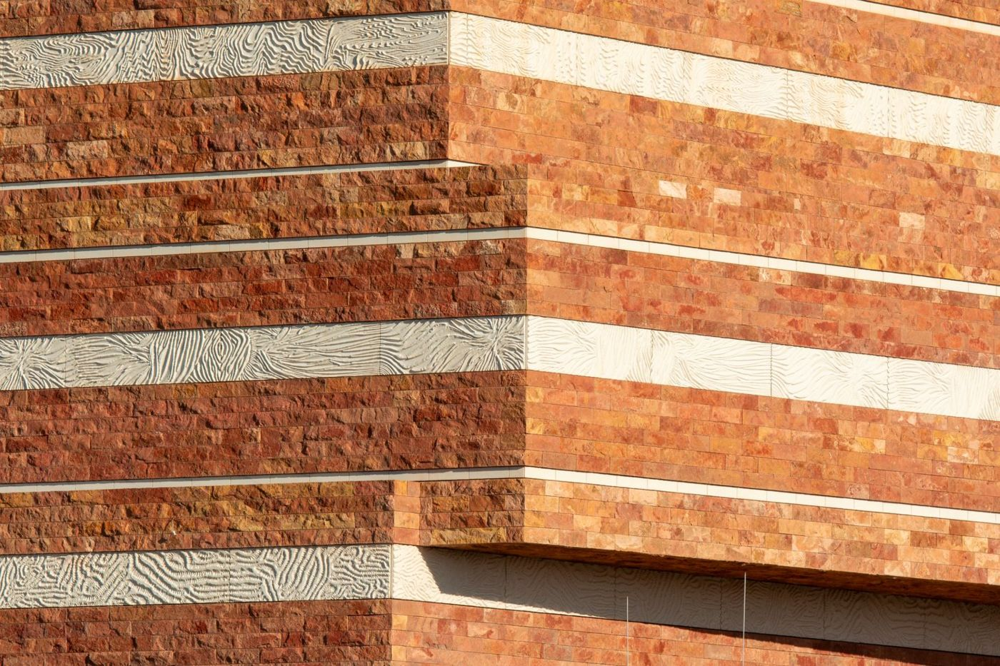
Le vrai débat
Nous vendons les deux. Voici pourquoi nous croyons à la terre cuite, sans exagérer ce qu'elle fait.
Une paroi qui garde mieux la fraîcheur en pleine journée. Un matériau qui respire, donc moins de condensation et de moisissures. Une matière première locale : une argile que nous extrayons nous-mêmes, dans nos carrières, et que nous cuisons sur place. Et une façade en parement qui n'a plus besoin d'enduit ni de peinture.
Nous n'avons ni label, ni essai de laboratoire publié, ni bilan carbone certifié. Les essais sur nos briques viendront après la première fournée. Tant que ce n'est pas fait, nous ne l'écrirons pas.
Métier 3 · Sur devis
Un bureau d'études, des plans, un chantier suivi. Le département BTP est dirigé par un ingénieur diplômé de l'ENSTP de Yamoussoukro.
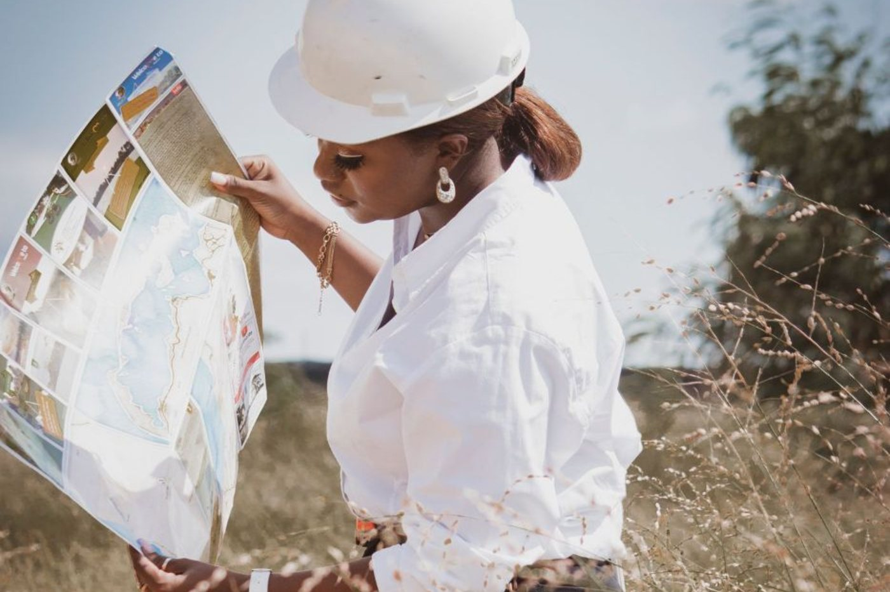
Rien ne part sur le terrain sans un plan validé et un métré chiffré. C'est ce qui sépare un chantier qui tient son budget d'un chantier qui s'arrête au premier imprévu.
Notre bureau d'études établit les dossiers d'appel d'offres, dessine, quantifie et coordonne. Il est dirigé par un ingénieur diplômé de l'ENSTP de Yamoussoukro.
Élaboration des dossiers d'appel d'offres, conception et réalisation des plans, métrés et quantitatifs.
Coordination des corps de métier, situation des travaux, sélection des ouvriers, contrat clé en main possible.
Travaux routiers, travaux hydrauliques, lotissement. Matériel de terrassement mobilisé en sous-traitance.
Vous ne payez jamais la totalité d'avance. Chaque tranche est appelée quand l'étape précédente est constatée, photos datées à l'appui.
Le devis est détaillé poste par poste. Vous savez ce que vous payez, ligne par ligne.
Photos datées du chantier avant tout appel de fonds.
Les briques sont posées, le niveau est constaté.
Charpente et tôles en place, la maison est hors d'eau.
Le solde n'est appelé qu'à la réception, après votre validation.
Pour la diaspora et les particuliers
Quatre formats courants. Cliquez sur celui qui vous ressemble, ajustez la surface, et vous voyez immédiatement le nombre de briques et ce que représente le poste maçonnerie.
Ces photographies sont des références d'architecture, pas nos réalisations. Elles servent à situer le volume et le standing. Le petit plan sous chaque photo indique la distribution type. Votre maison sera dessinée sur votre terrain, à partir de votre programme.
Les surfaces proposées sont des repères courants. Ajustez le chiffre : tout se recalcule. Le nombre de briques est estimé à 110 briques par m² habitable, un ratio calé sur nos repères de chantier de 12 000 à 15 000 briques pour une maison courante.
soit environ 7 379 €
Demander l'étude complèteCe chiffre couvre les briques seules. Il ne comprend ni les fondations, ni la charpente et la couverture, ni la plomberie, l'électricité et les finitions, ni la main d'œuvre. Le devis complet poste par poste vous est établi après étude de votre plan et de votre terrain. Nous ne publions pas de prix au m² tout compris, parce qu'un tel prix ne veut rien dire tant qu'on n'a pas vu le terrain.
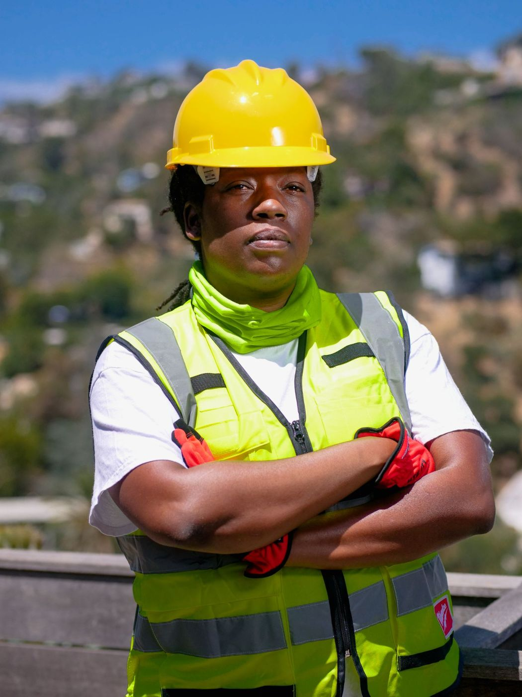
Pour la diaspora
Vous êtes à Paris, Milan, Montréal ou simplement à Abidjan. Le chantier est à Toumodi. Entre les deux, il n'y a pas un cousin qui rend compte de temps en temps : il y a une société immatriculée, un devis détaillé et des photos datées à chaque jalon.
Un devis nominatif poste par poste. Des photos datées à chaque étape. Un interlocuteur unique joignable sur WhatsApp. Une facture au nom de la société.
Pas de compte séquestre bancaire, pas de garantie décennale assurée, pas de portail de suivi en ligne. Nous le dirons le jour où ce sera vrai.
Hier, aujourd'hui, demain
Ce que nous industrialisons aujourd'hui, nos mères et nos pères le maîtrisaient déjà. Nous n'importons pas une technique. Nous rendons son échelle à un savoir qui est le nôtre.
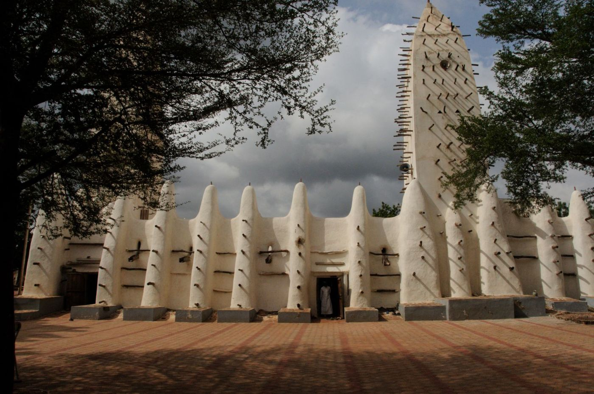
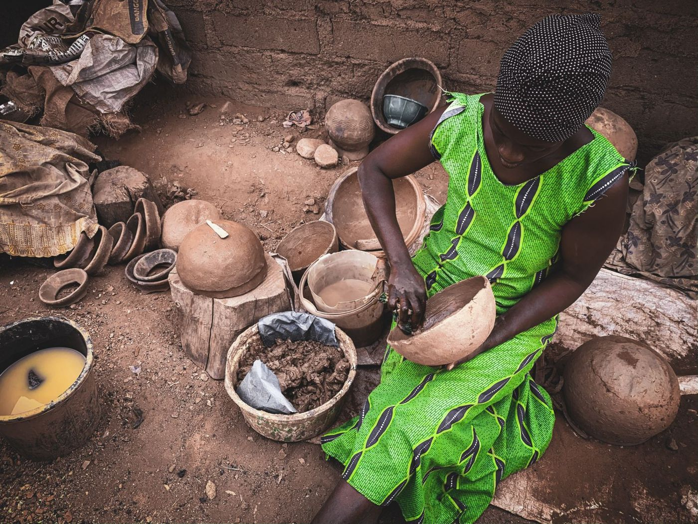
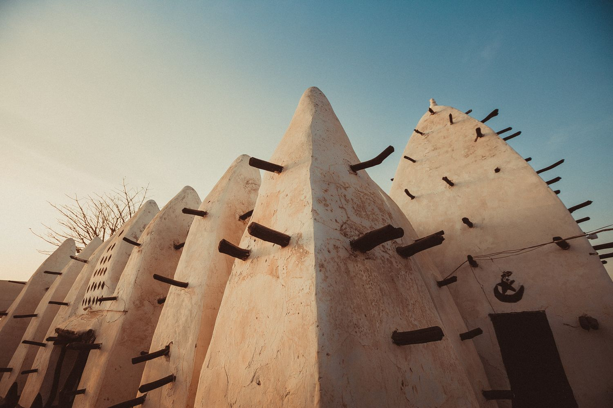
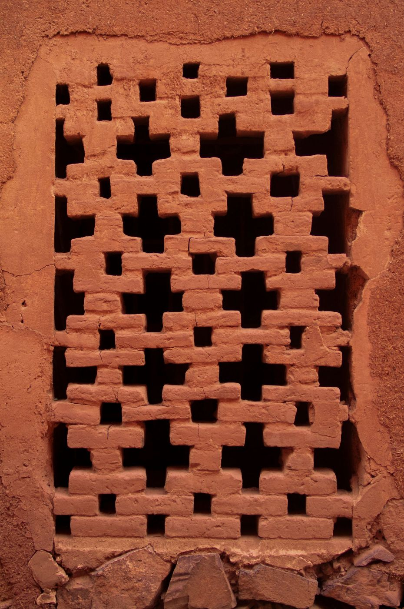
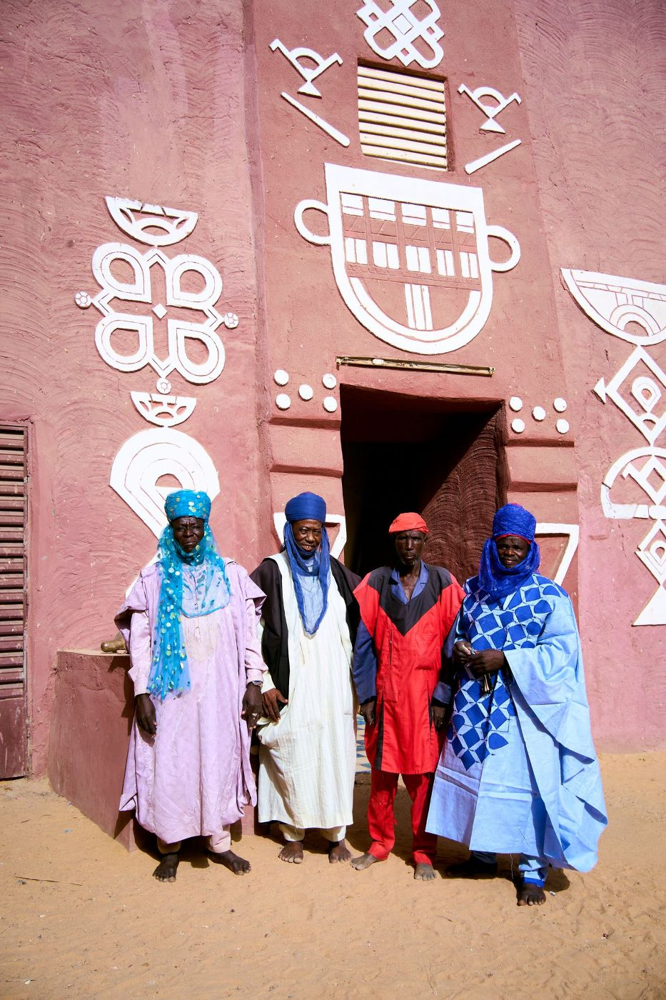
Le banco, la voûte nubienne, la poterie. La terre sous les pieds, façonnée à la main, cuite au feu de bois.
La même terre, extraite dans nos carrières, malaxée, extrudée, cuite en four à Toumodi. Le calibre est constant, la résistance est mesurable.
Que la génération suivante n'ait pas à choisir entre bâtir moderne et bâtir sain. Parce que la terre, au bout du compte, reste notre refuge.
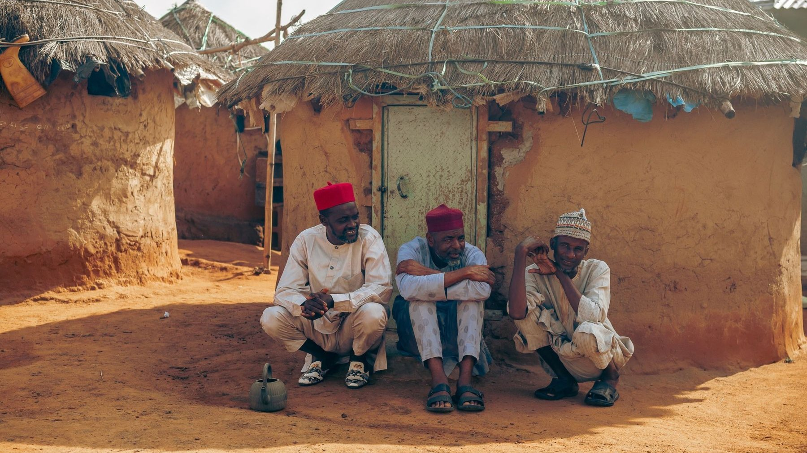
Notre raison d'être
Chez nous, on ne construit pas un abri. On construit le lieu où l'on naît, où l'on reçoit, où l'on veille les anciens et où l'on célèbre les vivants. La maison est le premier investissement d'une famille et le dernier qu'elle accepte de perdre.
Alors la question n'est pas seulement « combien ça coûte ». Elle est aussi : dans quoi allez-vous vivre durant votre passage terrestre ? Que léguez-vous à votre descendance ?
Nos anciens bâtissaient avec la terre qu'ils avaient sous les pieds. Ils ne le faisaient pas par idéologie. Ils le faisaient parce que ça tenait, parce que c'était frais, et parce que la matière était là. Nous voulons revenir à cela, avec les moyens d'aujourd'hui.
Un mur de terre cuite respire. Il régule l'humidité au lieu de la retenir, ce qui veut dire moins de moisissures dans les chambres et moins de peinture qui cloque au bout de deux saisons. Il garde la fraîcheur en pleine journée. Il ne dégaze rien dans la pièce. C'est ce que nous appelons un habitat sain.
Et la matière vient d'ici. Nous l'extrayons nous-mêmes, nous la cuisons à Toumodi, et elle est posée dans un rayon où le camion ne roule pas trois jours. Ce que nous économisons, ce n'est pas un argument de brochure : c'est du gasoil qui n'est pas brûlé.
Nous ne dirons pas que notre brique est neutre en carbone. Nous ne l'avons pas mesuré, et personne ne l'a mesuré pour nous. Cuire de la terre demande du feu, et le feu a un coût. Ce que nous pouvons dire, c'est d'où vient ce feu, et c'est écrit juste en dessous.
L'argument écologique, sans slogan
L'écologie se prouve par des faits vérifiables, pas par un logo vert. Voici ce que nous pouvons dire, et rien de plus.
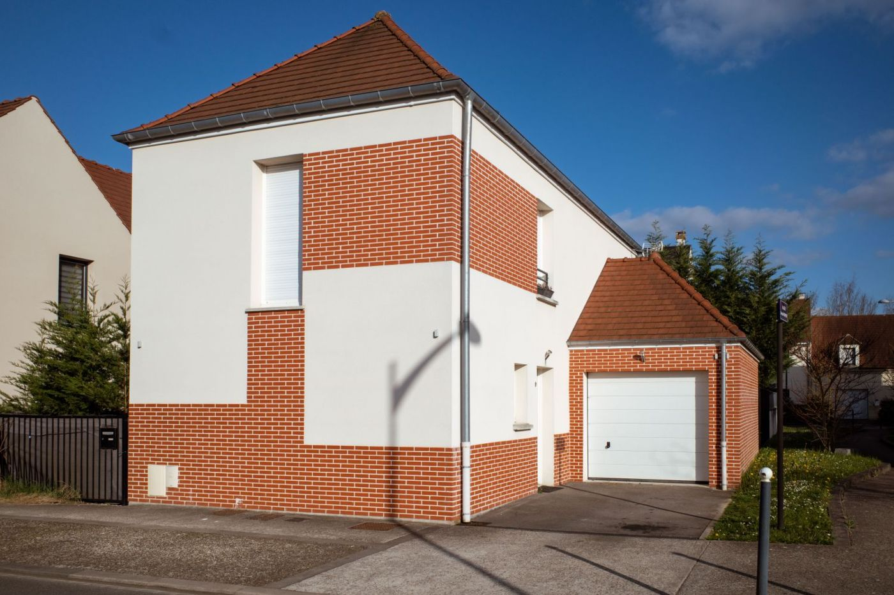
Livraison
Le transport pèse lourd sur un matériau lourd. Plutôt que de le noyer dans le prix, nous le chiffrons séparément. À vous de juger si cela vaut le coup.
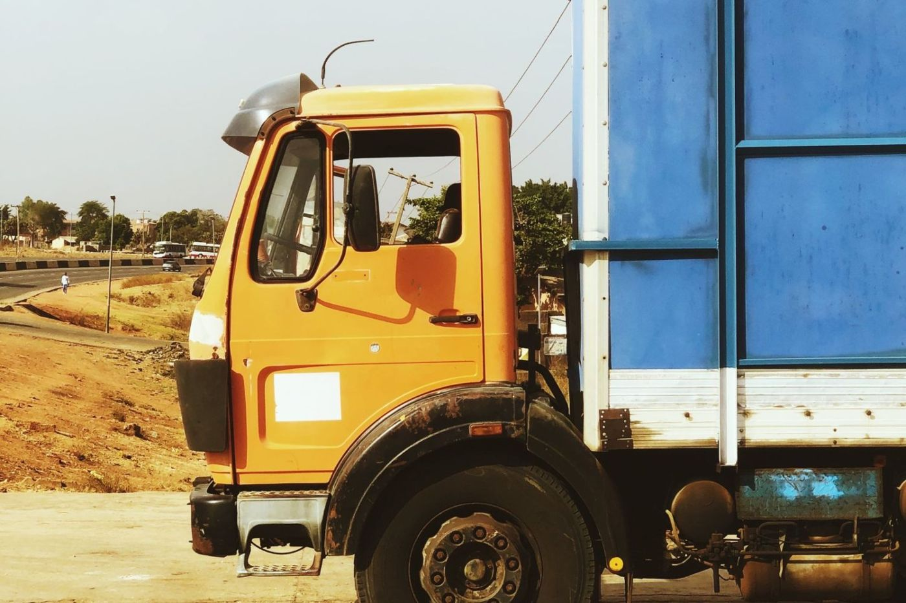
Sous 48 h
Abidjan, Bouaké, San Pedro, Korhogo, Man, Odienné. Pas seulement Toumodi et ses environs : le pays entier, en 48 heures au maximum.
Sur devis
Burkina Faso, Mali, Ghana, Guinée, Niger. Par la route, sur volume. Nous chiffrons l'acheminement complet avant que vous n'engagiez quoi que ce soit.
Notre horizon
Notre ambition ne s'arrête pas aux frontières ivoiriennes. Chaque marché ouvert le sera parce que nous savons y livrer, pas parce que ça sonne bien sur un site.
Nous ne travaillons pas avec un camion type. Le porteur est affrété selon deux critères : le tonnage à déplacer et la fragilité de ce que vous commandez.
Un lot de tuiles ou de plaquettes de parement ne voyage pas comme du fer à béton. Selon le cas, nous mobilisons du petit porteur au 50 ou 60 tonnes. Le coût du transport est calculé sur votre commande réelle et vous est communiqué avec le devis, ligne séparée, avant tout paiement.
Pour la diaspora : vous commandez et vous réglez depuis l'étranger, la livraison se fait à l'adresse de votre chantier ou de votre famille.
Bibliothèque
Cette bibliothèque se remplit chantier par chantier. Vous y trouverez ce que nous avons fait, daté et situé. Rien d'autre.
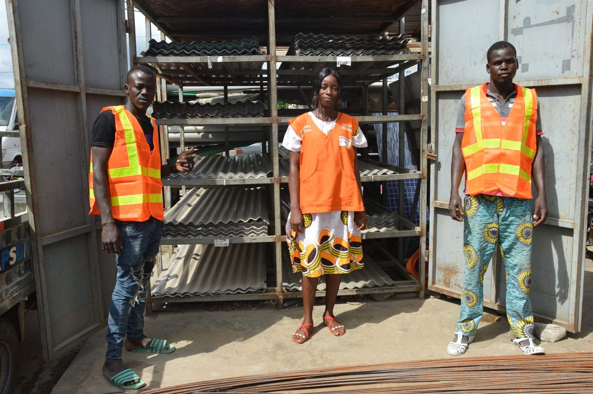
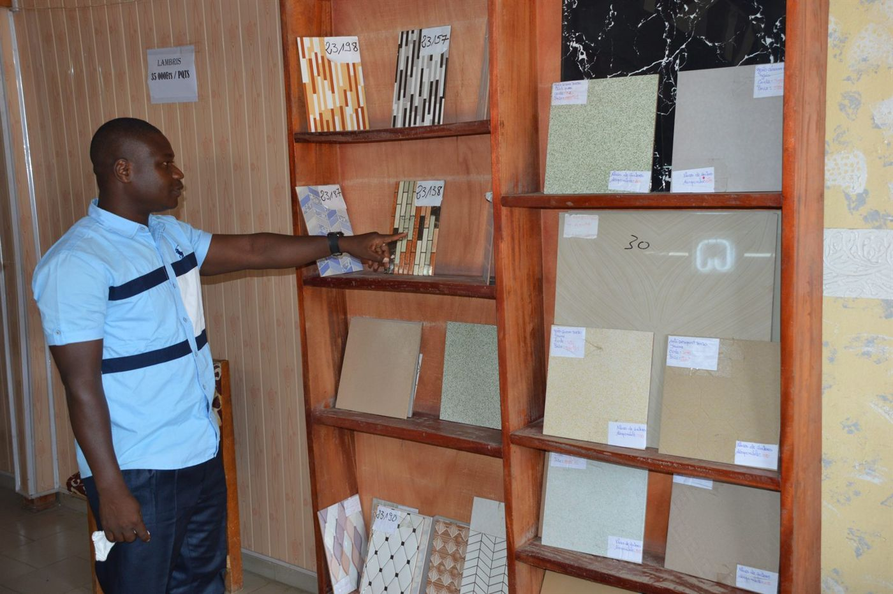
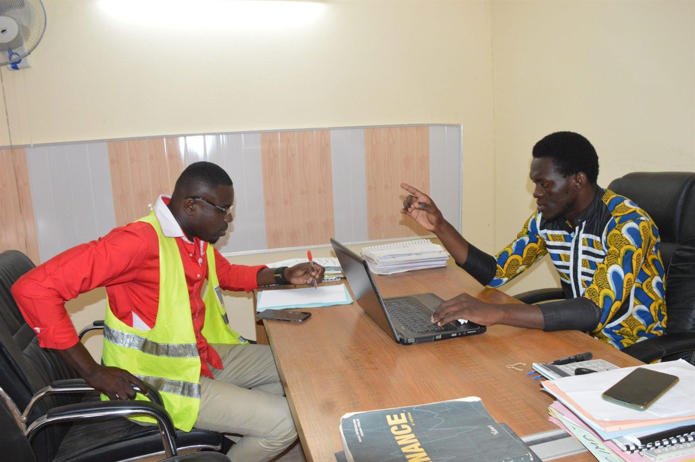
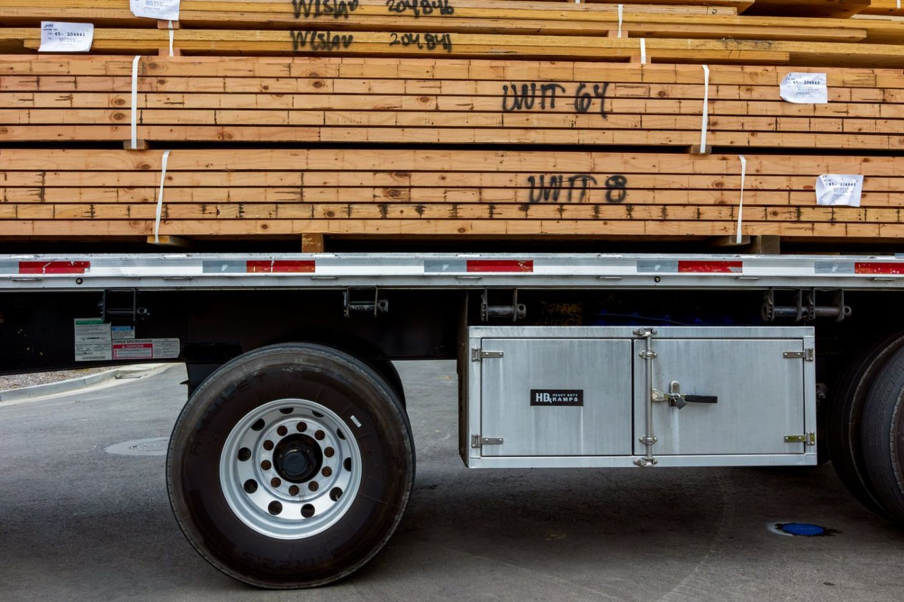
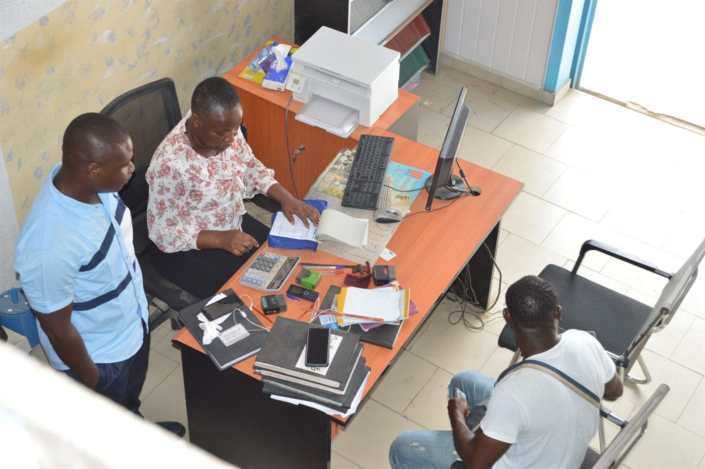
Nous préférons une page blanche à des photos de chantiers qui ne sont pas les nôtres. Chaque ouvrage livré viendra s'ajouter ici, avec sa date, sa commune et le nom du maître d'ouvrage quand il accepte d'être cité. Si vous voulez être le premier chantier de cette bibliothèque, écrivez-nous.
Terrassement, montage de la ligne, premier four, première fournée. Vous verrez les photos datées au fur et à mesure, y compris celles des étapes qui prennent du retard. C'est aussi comme ça qu'on juge une entreprise.
Confiance
C'est la bonne question. Voici les réponses, y compris celles qui ne nous arrangent pas.
Travailler avec nous
Nous ouvrons quatre portes. Chacune mène à quelqu'un qui lit vraiment les messages. Dites qui vous êtes et ce que vous savez faire, c'est tout ce que nous demandons pour commencer.
Ces ouvriers ne sont pas nos salariés : ce sont des indépendants que nous mobilisons lot par lot, selon le chantier et la spécialité. C'est ce qui nous permet d'armer une équipe en quelques jours, là où le chantier se trouve, sans porter une masse salariale à vide.
Maçons, ferrailleurs, charpentiers, carreleurs, plombiers, électriciens, peintres.
Concepteurs, ingénieurs structure, dessinateurs, géomètres, thermiciens.
Matériaux, matériel, transport, et fournisseurs de combustible de cuisson.
Financement de la ligne de production, du fonds de roulement et du déploiement.
Nous répondons à tout le monde, y compris pour dire non. Une candidature sans réponse, c'est le contraire de la proximité que nous revendiquons.
Une liste de matériaux, un plan, ou simplement une idée et un budget. Nous répondons avec des chiffres.